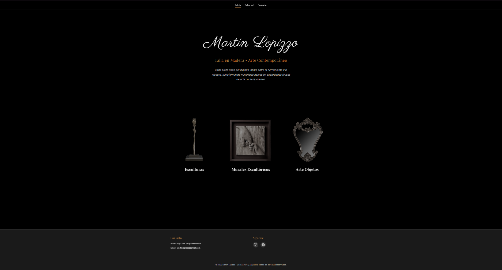

Talla en madera - Martin Lopizzo
Portafolio sobre artista de talla en madera y arte contemporáneo en Buenos Aires. Presenta sus obras con un estilo muy limpio y minimalista que deja protagonismo a las fotos de las piezas. Incluye una breve presentación del artista y una sección de contacto directo por WhatsApp, mail y redes sociales para consultas o encargos.